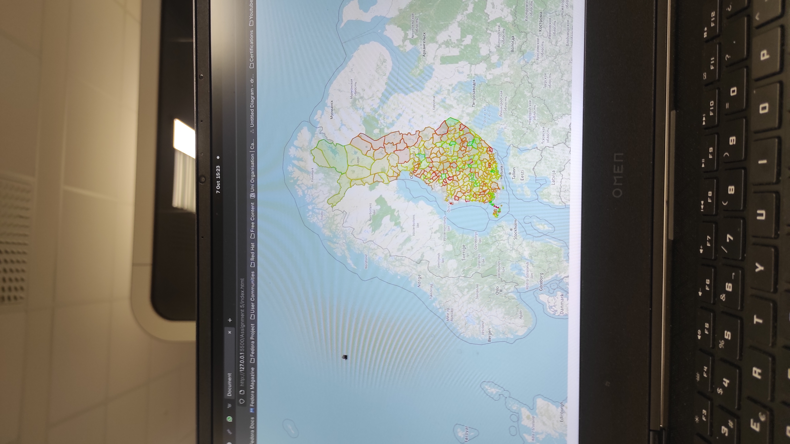
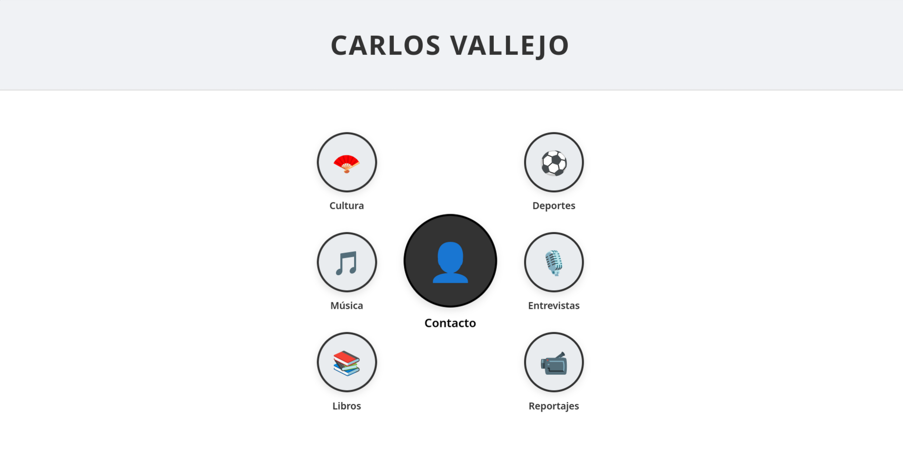

Aplicación web que através de APIs crea tablas informativas sobre el valor de las monedas en diferentes épocas del año y diferentes rangos.

Aplicación web que a través de API es capaz de dibujar un mapa de las regiones de Finlandia además de asociar a cada una de ellas información sobre la migración. - Verde: Migración positiva - Amarillo: Migración neutral - Rojo: Migración negativa Notas: Se observan flujos de migración positiva en regiones turísticas o de gran actividad económica. Se despoblan regiones aisladas o de duras condiciones climáticas.
